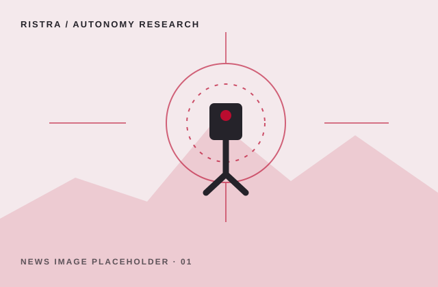

01 / RESEARCH HIGHLIGHT
Reliable autonomy in changing environments
DATE TO BE ADDED
A sample story summary for a RISTRA research highlight. Replace with a brief account of the project, its researchers, and its contribution.
Explore RISTRA research ↗